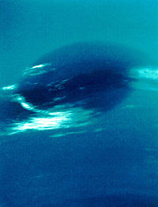
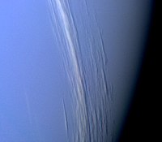
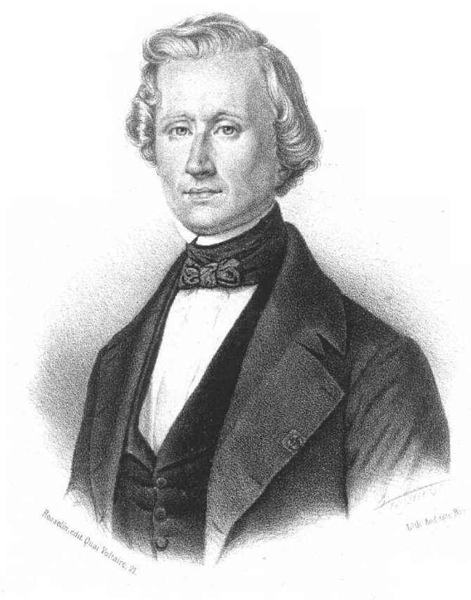
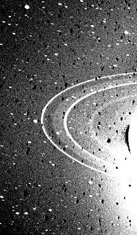
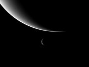
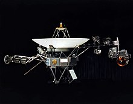

Нептун
 Нептун е осмата планета от Слънчевата система и най-външният газов гигант в нея. Тя е четвъртата по размери
и третата по маса. Нептун е най-отдалечената от Слънцето планета. Носи името на римския бог на морето
Нептун. Символът на планетата е стилизирано изображение на тризъбеца на Нептун (♆).
Открит на 23 септември 1846 г., Нептун е първата планета, чието съществуване е доказано чрез
математически изчисления, а не от емпирични наблюдения. Неочаквани промени в орбитата на Уран навеждат
астронома Алексис Бувар на мисълта, че Урановата орбита е подложена на гравитационни смущения от друга,
неизвестна дотогава планета. Нептун впоследствие бива открита от Йохан Гал на позиция, прогнозирана от Юрбен
Льоверие, а най-големият спътник, Тритон, бива открит скоро след това.
Атмосферата на Нептун е съставена основно от водород и хелий със следи от метан. Метанът в атмосферата е
причината за синия цвят на планетата, но понеже цветът на Нептун е много по-ярък от този на Уран, който има
същото количество метан, се смята, че има друга съставка, която му придава такъв наситен цвят. Нептун има
най-силните ветрове в Слънчевата система, достигащи до скорост от 2100 km/h.
Единственият апарат, посетил Нептун, е Вояджър 2, който се сближи максимално с планетата на 25 август 1989
г. При преминаването си е заснел в южното полукълбо Голямото тъмно петно, подобно на Голямото червено петно
на Юпитер. Температурата на високите му облаци достига до −218 °C, една от най-ниските в Слънчевата система
заради отдалечеността на планетата от Слънцето. Температурата в центъра на Нептун е около 7000 °C, което
може да се сравни с тази на повърхността на Слънцето.
Нептун е осмата планета от Слънчевата система и най-външният газов гигант в нея. Тя е четвъртата по размери
и третата по маса. Нептун е най-отдалечената от Слънцето планета. Носи името на римския бог на морето
Нептун. Символът на планетата е стилизирано изображение на тризъбеца на Нептун (♆).
Открит на 23 септември 1846 г., Нептун е първата планета, чието съществуване е доказано чрез
математически изчисления, а не от емпирични наблюдения. Неочаквани промени в орбитата на Уран навеждат
астронома Алексис Бувар на мисълта, че Урановата орбита е подложена на гравитационни смущения от друга,
неизвестна дотогава планета. Нептун впоследствие бива открита от Йохан Гал на позиция, прогнозирана от Юрбен
Льоверие, а най-големият спътник, Тритон, бива открит скоро след това.
Атмосферата на Нептун е съставена основно от водород и хелий със следи от метан. Метанът в атмосферата е
причината за синия цвят на планетата, но понеже цветът на Нептун е много по-ярък от този на Уран, който има
същото количество метан, се смята, че има друга съставка, която му придава такъв наситен цвят. Нептун има
най-силните ветрове в Слънчевата система, достигащи до скорост от 2100 km/h.
Единственият апарат, посетил Нептун, е Вояджър 2, който се сближи максимално с планетата на 25 август 1989
г. При преминаването си е заснел в южното полукълбо Голямото тъмно петно, подобно на Голямото червено петно
на Юпитер. Температурата на високите му облаци достига до −218 °C, една от най-ниските в Слънчевата система
заради отдалечеността на планетата от Слънцето. Температурата в центъра на Нептун е около 7000 °C, което
може да се сравни с тази на повърхността на Слънцето.
Физически характеристики
Атмосфера
 Поради отдалечеността си от Слънцето Нептун получава много малко слънчева енергия. Повърхностната температура на планетата е −218 °C (55 K). Тя обаче, изглежда, има вътрешен източник на топлина, за който се смята, че е останал още от акрецията на младата планета и който бавно се разсейва в околното пространство. В атмосферата на Нептун бушуват най-бързите ветрове в Слънчевата система – до 2000 km/h, които вероятно се подхранват от потока топлина от вътрешността на Нептун.
Структура
Вътрешната структура на планетата е подобна на тази на Уран. Тя вероятно има планетно ядро от разтопени скали и метали, което е обхванато от слой, съдържащ скали, вода, амоняк и метан. Атмосферата, за която се смята, че обхваща най-горните 10 до 20% от планетата, съдържа водород и хелий в горните си слоеве с нарастващо съдържание на метан, амоняк и вода при увеличаване на дълбочината и плавен преход към втечнената вътрешност на планетата. Скоростта на въртене и сплеснатостта на Нептун показват, че неговата маса е по-малко концентрирана в ядрото му, отколкото тази на Уран. В търсенето на ексозпланети Нептун се използва като метоним; откритите тела с близка маса до тази на Нептун се наричат „Нептуни“, подобно на Юпитерите, които се отнасят към тела с маса, приблизително равна на тази на Юпитер.
Магнитно поле
Нептун има сходна магнитосфера с тази на Уран. Магнитното ѝ поле е под голям ъгъл спрямо оста на въртене на планетата (47°) и отместено поне 0,55 радиуса на планетата (13 500 km) от геометричния център. Магнитното поле се генерира от движение на заредени частици във вътрешността на планетата, но детайли относно точния механизъм на това движение все още не са известни. За разлика от тази на Уран, атмосферата на Нептун е богата на метеорологични явления. За Нептун е характерно Голямото тъмно петно с размери, близки до тези на Земята, и еквивалентно на Голямото червено петно на Юпитер. За разлика от това на Юпитер обаче, тъмното петно на Нептун изчезна през 1994 г. и скоро след това се появи друго. Специфично за газовите гиганти е наличието на облаци високо в тяхната атмосфера, хвърлящи сянка върху по-ниско разположените облаци
Климат
Една разлика между Нептун и Уран е специфичната степен на метеорологична активност при първата планета. Когато Вояджър 2 прелита край Уран през 1986 г., се установява, че атмосферата му е много спокойна. Нептун се оказва пълна противоположност, демонстрирайки забележителни атмосферни феномени. Метеорологичното време на Нептун се характеризира с изключително динамични бури, чиито ветрове достигат скорост от почти 600 m/s – почти свръхзвукови ветрови потоци. Изследванията на постоянната облачна покривка показват, че скоростта на вятъра най-често варира от 20 m/s в източна посока до 325 m/s в западна посока. Над облачната покривка скоростта на ветровете варира от 400 m/s в района на екватора до 250 m/s при полюсите – този процес представлява своеобразно климатично динамо. Повечето от ветровете на Нептун се движат в посока, обратна на въртенето на планетата. Общият модел на ветровете демонстрира проградно въртене на високи географски ширини срещу ретроградно въртене на по-ниски географски ширини. Разликата в посоката на теченията се смята за повърхностен ефект и не е породена от дълбоки атмосферни процеси. При 70° южна ширина ветровете имат постоянна скорост от 300 m/s.
 Наличието на метан, етан и етин на екватора на Нептун е от 10 до 100 пъти по-голямо, отколкото на полюсите. Това се тълкува като доказателство за издуване на планетата при екватора и сплескване при полюсите. През 2007 г. се установява, че в горната част на тропосферата на южния полюс на Нептун е с около 10 °C по-топло от останалата част на Нептун, която има средна температура от около -200 °C (70 K) Топлинната разлика позволява на метана, който в останалите части на планетата е в замръзнало състояние, да се превръща в газ около южния полюс и да излита в Космоса. Относителната „гореща точка“ се дължи на наклона на оста на Нептун, която излага южния полюс към Слънцето за последната 1/4 от Нептуновата година, или около 40 земни години. Тъй като планетата се придвижва бавно към обратната страна на Слънцето, южният полюс отново ще стане по-студен, а размразяването на метана ще протича около северния полюс.
Поради изключително дългата година на Нептун сезоните траят около 40 земни години всеки. През 1989 г. корабът Вояджър 2 открива Голямото тъмно петно, антициклонна бурна система с площ 13 000 на 6600 km. Бурята прилича на Голямото червено петно на Юпитер. Около пет години по-късно обаче, на 2 ноември 1994 г., от телескопа Хъбъл Голямото тъмно петно на планетата не бива забелязано. Вместо това нова буря, подобна на Голямото тъмно петно, бива установена в северното полукълбо на планетата. Тъмните петна на Нептун вероятно възникват в тропосферата при по-ниска височина от ярките бели облаци и вследствие на това те приличат на дупки в облачната покривка. Тъй като те са достатъчно стабилни, за да съществуват в продължение на няколко месеца, те биха могли да са вид вихрови структури. Около тъмните петна често се забелязват по-ярки, устойчиви метанови облаци, които се формират около тропопаузовия слой на петната. Задържането на някои от тези облаци показва, че някои от тъмните петна продължават да съществуват като циклони, въпреки че вече не се забелязват. Тъмни петна може да се разсеят, когато се придвижат твърде близо до екватора или евентуално с помощта на някакъв друг, неизвестен климатичен механизъм.
Откриване
 Астрономическите скици на Галилео Галилей свидетелстват за наблюдението му на Нептун на 28 декември 1612 г. и 27 януари 1613 г. И в двата случая обаче Галилео смята, че е наблюдавал звезда в непосредствена близост до Юпитер, а не обект в Слънчевата система. Поради тази причина Галилео не се посочва като откривател на Нептун, въпреки че в записките си отбелязва взаимното движение на Юпитер и „звездата“. През 1821 г. Алексис Бувар публикува астрономически таблици на орбитата на Уран. По-нататъшните наблюдения на планетата обаче показват различия между наблюдаваните и предвидените от таблицата координати, което води до хипотезата, че съществува тяло, оказващо влияние върху орбитата на Уран. През 1843 г. Джон Коуч Адамс изчислява орбитата на неизвестната осма планета и изпраща изчисленията си на опитния астроном сър Джордж Ери. Той изисква пояснения за използваните методи, които Адамс така и не изпраща. През 1846 г. Юрбен Льоверие независимо от Адамс изчислява орбитата на Нептун, но също както своя британски колега не среща съдействие у сънародниците си за издирването на планетата. През същата година Джон Хършел усъвършенства математическия анализ на орбитата и убеждава скептичния си колега астроном Джеймс Шелис да започне търсене през юли 1846 г.
Междувременно Льоверие пък убеждава Йохан Готфрийд Гал от Берлинската обсерватория да започне търсене. Асистентът на Гал – Хейнрих д'Арест – тогава все още студент, предлага сравнение на обектите в района за търсене, предложен от Льоверие с предишна звездна диаграма с цел откриване на нови обекти. Нептун е открит вечерта на 23 септември 1846 г., почти веднага след започване на наблюденията, и на следващата вечер придвижването на планетата спрямо звездите е документирано и откритието на новата планета е оповестено. Разликата между действителната и предвидената от Льоверие позиция на Нептун е 1°, а спрямо тази на Адамс – 10°. Джеймс Шелис впоследствие осъзнава, че е наблюдавал планетата на два пъти през август, но поради небрежността си, породена от скептицизъм, не прави необходимата връзка между двете наблюдения. След откриването на планетата избухват националистични спорове между френски и британски астрономи относно това, чии заслуги за откриването на планетата са по-големи – на Адамс или на Льоверие. Взето е компромисно решение двамата астрономи да си поделят заслугата по откриването на Нептун. Скорошен анализ на документи от архивите на Кралската Гринуичка обсерватория, присвоени незаконно от астронома Улин Айген и върнати непосредствено след смъртта му обаче, показва, че Адамс не заслужава равна заслуга по откриването на планетата.
Наблюдение от Земята
Нептун не може да се забележи с просто око. Изглежда като синьо-зелен диск, подобен на Уран, но по-тъмен. Синьо-зеленият цвят се дължи на поглъщането на червената светлина от метана в атмосферата на планетата. Видимата величина на Нептун варира между +7,7 и +8 и дискът му е с ъглов диаметър от 2". Тъй като са му необходими 165 години, за да извърши едно пълно завъртане около Слънцето, през 2011 г. Нептун се върна в позицията, на която е бил при откриването си от Йохан Гал.
Пръстените на Нептун
Нептун има бледи пръстени с неизвестно съдържание. На тях се наблюдават необикновени „струпвания“ на материал, вероятно предизвикани от гравитационното влияние на някои от спътниците на планетата.
 Доказателство за прекъснатостта на пръстените са проведените през 80-те години на 20 в. наблюдения на окултация на звезди зад Нептун. В някои случаи се наблюдава допълнително „мигане“ на светлината от звездата, преди да изчезне зад Нептун, дължащо се на преминаването ѝ зад пръстен. Фактът, че мигането понякога не се наблюдава, сочи, че един от пръстените на Нептун е прекъснат и понякога не закрива светлината от звездите на заден фон. Снимки, направени от Вояджър 2 през 1989 г., предоставят окончателното доказателство, като разкриват, че най-външният пръстен на Нептун, наречен „пръстен Адамс“, е разделен на три отчетливи арки, които сега са известни под имената „Свобода“, „Равенство“ и „Братство“. За гравитационния ефект на спътника Галатея, намиращ се по-близо до Нептун от пръстена, се смята, че „поддържа“ тези арки, но подробности за механизма, пораждащ това групиране на материала, засега не са известни. Основните пръстени на Нептун са тесният пръстен „Адамс“, който се намира на 63 000 km от центъра на планетата, широкият пръстен „Льоверие“, който е на 53 000 km, и бледият пръстен „Гал“ на 42 000 km. Няколко нови пръстена също биват регистрирани от камерите на Вояджър – в това число пръстен „Ласел“, обхващащ пръстена „Льоверие“ и граничещ с пръстена „Араго“.
Троянски астероиди
Към 2005 г. са известни два троянски астероида на Нептун, всеки от които има орбитален период, равен на този на планетата. Намират се в точките L4 и L5. Астероидите носят означенията 2001 QR322 и 2004 UP10. През 2005 г. са наблюдавани още три астероида, за които се счита, че са троянски, но за установяването на орбитата им са необходими допълнителни наблюдения: 2005 TN53, 2005 TN74 и 2005 TO74.
Спътниците на Нептун
Нептун има 14 известни естествени спътника. Най-големият от тях е Тритон, открит от Уилям Ласел само 17 дни след откриването на Нептун. През 2004 г. беше оповестено откритието на пет малки спътника, имащи неправилна форма. Тритон е достатъчно близо до Нептун, за да бъде заключен в синхронна орбита, бавно се приближава навътре и евентуално ще бъде разкъсан, когато достигне границата на Рош. Тритон е най-студеният спътник в Слънчевата система с температура −235 °C (38 K). За разлика от всички други планетни спътници в Слънчевата система, Тритон има ретроградна орбита, което означава, че той по-скоро е прихванат, отколкото формиран и най-вероятно преди е бил планета-джудже в Пояса на Кайпер  Вторият познат спътник на планетата (по ред на разстоянието) е Нереида и има една от най-ексцентричните орбити в Слънчевата система. От юли до септември 1989 г. Вояджър 2 открива шест нови спътника. Сред тях е Протей. Пет нови спътника са открити през 2002 и 2003 г. и са оповестени през 2004 г. Нептун е римският бог на морето и затова спътниците на планетата са именувани на по-малки морски божества.
Изследване на Нептун
Най-близко до планетата се доближава сондата Вояджър 2 на 25 август 1989 г. Това е последната планета, която апаратът достига, и затова е решено да се направи полет около спътника Тритон, подобно на прелитането на Вояджър 1 близо до Сатурн и спътника му Титан. Сондата открива Голямото тъмно петно и след нови наблюдения с телескопа Хъбъл се оказва, че петното е изчезнало. Първоначално се смята, че представлява огромен облак, а по-късно − за дупка във видимия диск от облаци.  Оказва се, че Нептун има най-силните ветрове от всички газови гиганти в Слънчевата система. Във външните региони на Слънчевата система, където Слънцето свети с 1000 пъти по-слаба светлина, отколкото на Земята, последният от четирите газови гиганта надхвърля всички очаквания на учените.
Някои смятат, че колкото по-далече от Слънцето си, толкова по-малко енергия ще има за раздвижване на ветровете. Тези на Юпитер се движат със стотици km/h. Учените откриват, че ветровете на Нептун се движат с по-голяма скорост (от 1600 до 2100 km/h) въпреки по-голямата си отдалеченост. Предполага се, че причината за тази забележителна аномалия е, че ако се произвежда достатъчно енергия, се създава турбуленция, която забавя ветровете (подобно на тези на Юпитер). На Нептун обаче има толкова малко слънчева енергия, че като започнат ветровете, не срещат почти никакво съпротивление и затова поддържат екстремално висока скорост. Въпреки това Нептун излъчва повече енергия, отколкото получава от Слънцето, и вътрешният енергиен източник за тези ветрове остава неопределен.